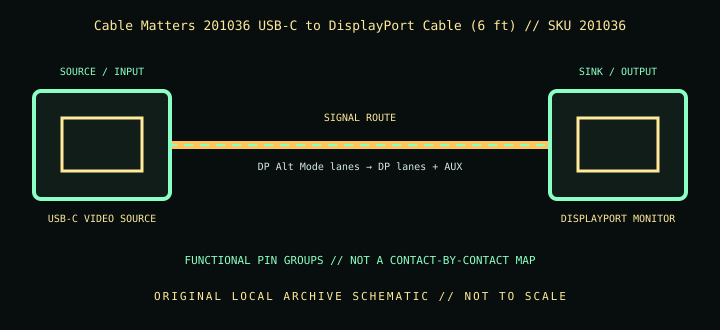

[ INDIVIDUAL COMPONENT // CABLES & ADAPTERS ]
Cable Matters 201036 USB-C to DisplayPort Cable (6 ft)
A 6 ft (1.8 m) one-way USB-C-to-DisplayPort cable for compatible DP Alt Mode or Thunderbolt sources and a DisplayPort monitor; not a USB-C-monitor cable.

IDENTIFICATION: Catalog SKU: 201036. Record the complete label, regional suffix, hardware model/revision, and cable length printed on the specimen; nearby model variants are not interchangeable by assumption.
Specifications & connector revisions
| Catalog subcategory | Display cables and adapters |
|---|---|
| Manufacturer / SKU | Cable Matters 201036 USB-C to DisplayPort Cable (6 ft) — 201036 |
| Connector ends / length | USB-C male source → full-size DisplayPort male display; 6 ft (1.8 m) cable for this length variant. |
| Protocol and revision | Cable Matters lists 8K-ready DisplayPort output, with 8K at 60 Hz or 4K at 240 Hz requiring compatible DP 1.4 HBR3 and Display Stream Compression (DSC) at both source and sink. Lower modes depend on the GPU and monitor. MST/audio and HDR features are endpoint-dependent rather than created by the cable. |
| Signal path / pinout | The host’s USB-C connector carries negotiated DisplayPort Alt Mode lanes/control; the other end terminates in DisplayPort lanes, auxiliary channel, and return/ground. The signal route is one-way; no HDMI conversion or USB-C monitor negotiation occurs inside this cable. |
| Mode and bandwidth caveats | Peak 8K60/4K240 needs DP 1.4 HBR3 + DSC on source and display and can be constrained by GPU, OS, chroma, refresh, monitor input settings, or intermediate docks. A 6 ft run has less signal margin than shorter alternatives in marginal setups; avoid extension/adapter chains and update host graphics/firmware if link training fails. |
Compatibility & direction
Use from a USB-C/Thunderbolt source with DP Alt Mode to a DisplayPort-input monitor. Cable Matters explicitly says it does not work in reverse or with USB-C/Thunderbolt monitors such as a USB-C-input display. Direct host-to-monitor connection is preferred; a hub/dock must itself provide video output.
Handling & archival notes
Keep the stated source and sink ends in their specified direction; do not force keyed connectors or use this product as an assumed voltage/pinout substitute for a superficially similar cable. Support the tether during connection, keep contacts clean and dry, and avoid tight bends at molded strain reliefs.
For the archive, photograph both connector faces, labels, packaging SKU, length, and revision. If a mode is tested, record source model/GPU and firmware, sink model/firmware, intermediate adapters, cable run, resolution, refresh rate, chroma/HDR, and whether HDCP succeeds. Test results apply to that exact chain, not all variants.
Manufacturer and standards sources
- Cable Matters — USB-C to DisplayPort Cable, 8K ReadyManufacturer product page for the cable family and advertised modes.
- Cable Matters — 201036 USB-C to 8K DisplayPort Cable supportManufacturer knowledge-base article for model 201036 and direction/compatibility caveats.
Maximum modes are source-, sink-, firmware-, signal-path-, and revision-dependent. Manufacturer documentation for the exact SKU and hardware model takes precedence over family names and connector appearance.